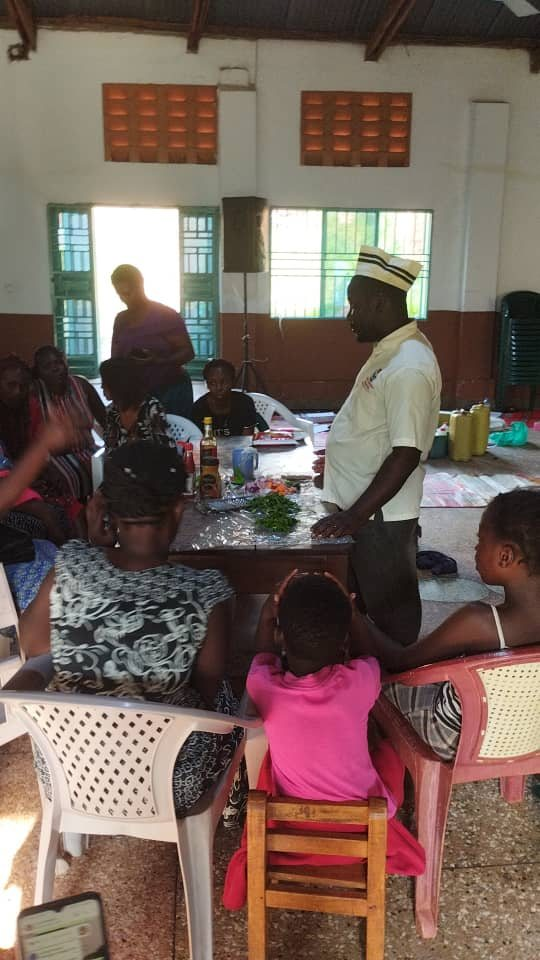
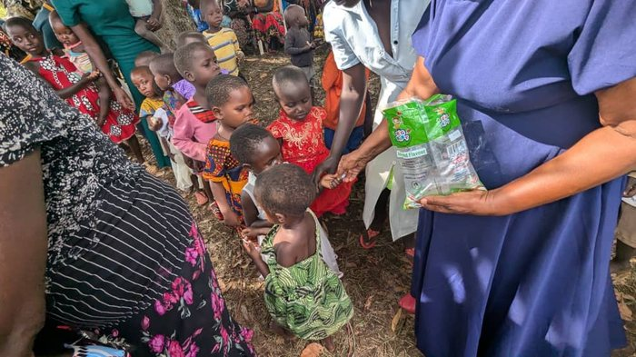

From one woman's kitchen table to a movement across Kasangati, this is the Turikumwe story.
Turikumwe Charity Organisation Ltd began in Kasangati with a small circle of women who had nowhere else to turn, survivors of hardship, single mothers, girls who had dropped out of school. We started teaching one skill: cooking. Word spread. Soon women were asking for soap-making, piggery, catering. Their daughters needed pads to stay in school. Their sons wanted a place to belong, so a dance troupe was born, and it now performs at community events across the region.
Registered in 2022, we remain rooted in one conviction: dignity is restored through skill, safety and belonging, not charity alone. Every program we run exists because a woman asked for it first.


To improve lives while creating a path out of poverty, one skill, one family, one community at a time.
A world of hope, sustainable for all, where every woman and child has room to grow and thrive.
Every program starts with dignity and compassion, people are never treated as projects.
We build programs around what women and families actually ask for, not what we assume they need.
We measure success in income earned and businesses started, not just workshops attended.
A zero-tolerance stand against domestic violence, and safe spaces for every survivor who reaches out.
A timeline built one grateful mother, one graduated trainee, one dance performance at a time.
A small cooking circle for eight women becomes a registered charity organisation.
Catering, piggery and liquid soap-making are added after women ask for more trades to master.
Menstrual health distribution begins in local schools alongside domestic violence awareness circles.
Our first community performance, now a regular feature at events across the region.
480+ women trained and counting, with new communities reaching out every month.
Whether it's an hour of mentorship or a monthly gift, there is a place for you in this story.